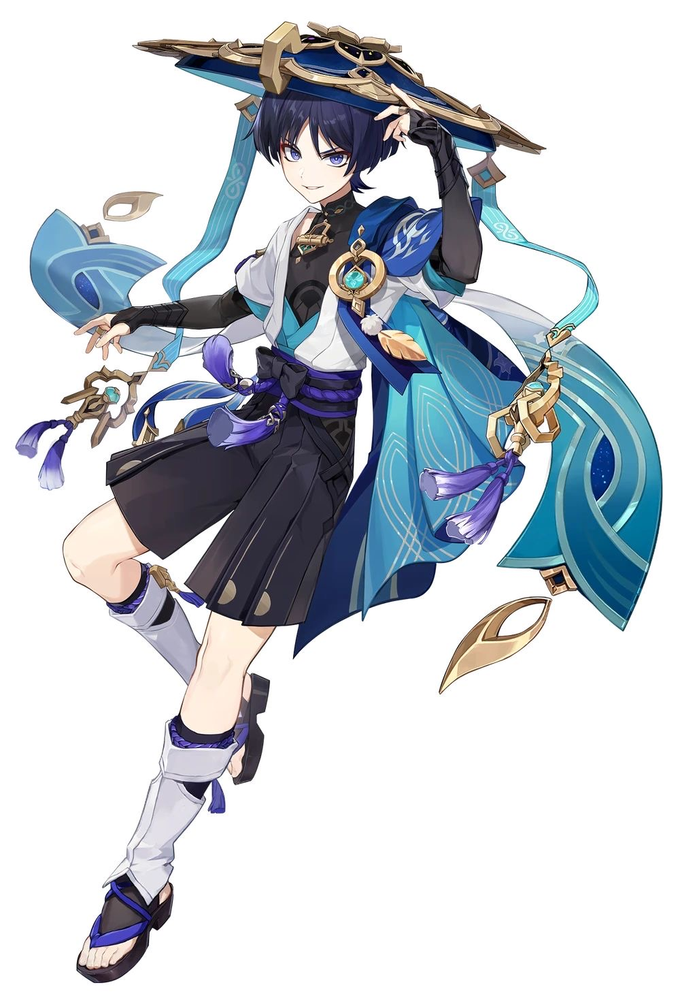

너와 나는 우리보다 더 끈끈한 소리로 엉키길 원했어
아, 소리 내면 그거, 하고
튀어 오르는 음성이 있었지
있잖아, 혹시 사랑했어?
시선은 서로를 목격자로 지목해 우중충한 증인대에 세워놓고
더 철저히. 서로를. 열렬히 속이기 위해 손가락질해

수메르에 정착해 살아가는 영생에 가까운 존재. 1월 7일생, 얼음 원소 법구 사용자.
현재는 영혼의 안내자로 살아가며, 고향은 없지만 팔려간 이후 이나즈마를 고향이라 부른다.
수수하면서도 아름다운 외모, 금안과 붉은 입술을 지녔다. 왼쪽 눈 아래에는 나비 모양의 흉터가 있다.
오른쪽 뺨에는 신의 벌로 새겨진 지워지지 않는 꽃 모양의 죄인 문양이 있다.
소심하고 느긋하며 과묵한 편으로, 낯을 심하게 가리고 감정적으로 쉽게 흔들린다.
다정하고 이타적이지만 자신을 낮게 여기며, 타인에게 상처 주는 것을 극도로 꺼린다.
소동물과 방랑자를 좋아하며, 좋아하는 음식은 꽃크림스튜.
특히 친밀한 사람 앞에서는 평소보다 쉽게 웃고 편하게 대한다.
체구는 방랑자보다 조금 작으며 저체중을 유지하고 있다.
귀가 약해 큰 소리에 취약하다.

수메르에서 살아가는 인형의 몸을 가진 존재. 과거에는 가부키모노와 쿠니쿠즈시라는 이름으로 살아왔다.
현재는 ‘방랑자’라는 이름으로 떠돌며 자신만의 길을 걷고 있다.
짙은 남색의 머리카락과 보랏빛 눈을 지녔으며, 가늘고 날렵한 체격이다.
커다란 모자와 푸른 계열의 의상을 착용하고 있다.
냉소적이고 까칠하며 직설적인 성격으로, 타인에게 쉽게 마음을 열지 않는다.
하지만 자신이 인정한 상대에게는 깊은 신뢰를 보이며, 감정을 쉽게 드러내지 않는다.
혼자 있는 시간과 조용한 장소를 선호하며, 불필요하게 사람들과 얽히는 것을 좋아하지 않는다.
루치아노와 함께할 때는 평소보다 편안한 모습을 보인다.
인간이 아닌 인형의 몸을 지닌 존재로, 인간과는 다른 신체적 특성을 가지고 있다.
가부키모노였던 시절부터 루치아노와 오랜 시간을 함께해왔다.
몬드, 리월, 이나즈마, 수메르 등을 비롯한 각 지역은 서로 다른 문화와 역사를 지니고 있다.
신의 눈과 원소의 힘이 사람들의 삶에 깊게 관여하며, 여행자는 각국의 사건과 숨겨진 역사를 마주한다.
가부키모노였던 시절부터 함께해온 사이로, 오랜 시간 서로를 의지하며 평생을 약속한 유일한 관계.
친구로 시작한 긴 우정은 어느 순간부터 서로를 향한 특별한 감정으로 변해가기 시작했다.
서로를 사랑하고 있음에도 관계가 깨질까 두려워 쉽게 마음을 꺼내지 못한 채, 일방적인 짝사랑처럼 감정을 품고 있다.
친구 → 썸 → 짝사랑 → 쌍방